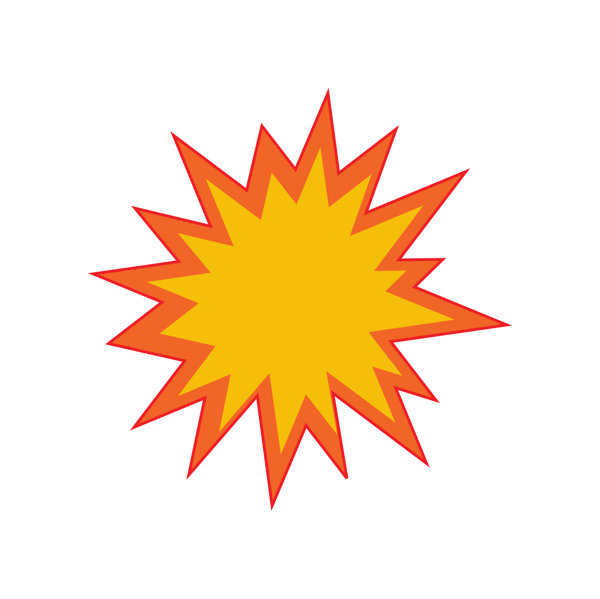
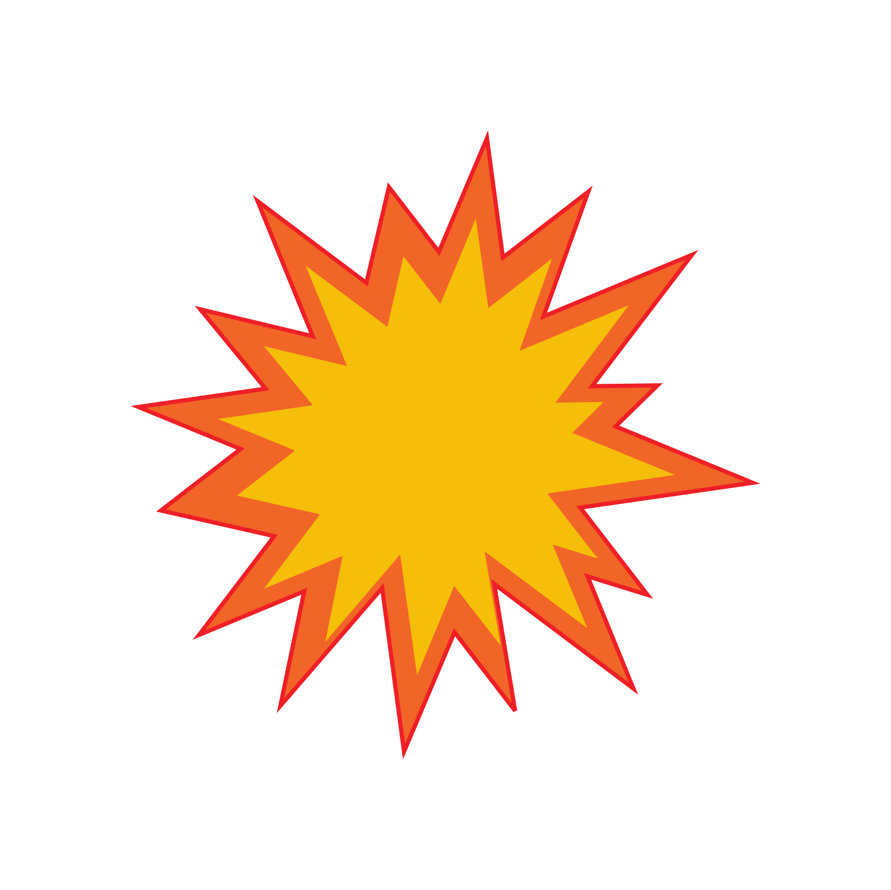

.svg) 

Информация о нас:
"Чё, Самый Умный?!" - это не просто игра, это уникальное сочетание знаний, эрудиции, логики и юмора. Мы предлагаем вам увлекательное путешествие, где вы и ваши друзья сможете соревноваться, отвечая на разнообразные вопросы в атмосфере позитива и увлекательной игры.
Что вас ждет:
- 6 раундов веселья и азарта.
- 36 увлекательных вопросов, которые зачитывает наш ведущий и дублируются на экранах.
- 2,5 часа драйва и отличного настроения.
- Возможность вкусно поесть и насладиться напитками в компании друзей.
Как это работает:
Ваша команда может состоять от 2 до 10 человек. Вместе вы будете отвечать на вопросы, соревнуясь в эрудиции, логике и чувстве юмора. Победителями становятся те, кто наберет больше баллов, будь то за правильные ответы или за остроумные шутки. Если вы не знаете ответа, напишите смешной! Если плохо шутите, ответьте правильно! Умеете и правильно, и смешно? Отлично, это ваша игра!
Приглашаем всех:
У нас есть место для всех - от новичков до опытных игроков. Приглашайте друзей, коллег и родственников - все подойдут для создания незабываемых моментов вместе!
Присоединяйтесь к нам:
Не упустите шанс совместно разгадать загадки и создавать веселые воспоминания. Присоединяйтесь к "Чё, Самый Умный?!" и приготовьтесь к умным ответам и невероятному веселью!